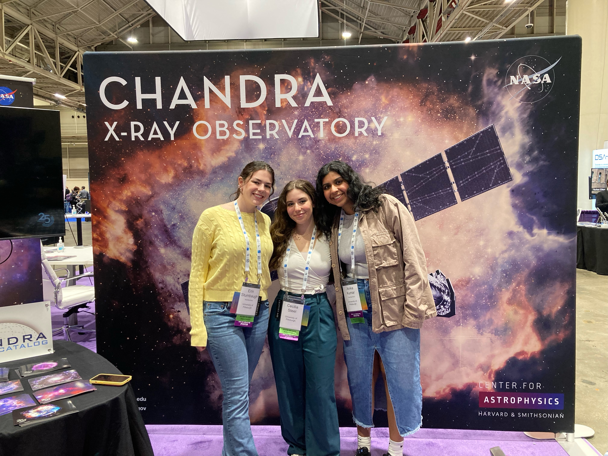

About Me

Education: Rochester Institute of Technology: M.S. Astrophysics (Present)
University of Pittsburgh: B.S. in honors Physics and Astronomy, Computer Science minor (2021-2024)
Research Interests:
My research interests lie in studying the evolution of galaxies through cosmic time. I combine SPS modeling codes with photometric and spectroscopic observations to derive the star-formation histories of galaxies.
Currently, I am studying galaxies in the early universe (z ~ 7-12)
Publications: Kumar+ 2024 in prep :)
Other Hobbies: I love yoga, hiking , and chess!! :)
Research
--> Rochester Institute of Technology:
Currently I am utlizing POPPIES (a JWST pure-parallel NIRCam WFSS survey) to study star formation in the early universe (z ~ 7-12). I combine photometric
and spectroscopic observations with SPS modeling codes to derive the star formation histories (what the cartoon shows). More to come for the results of this work.... ;)
University of Pittsburgh:
Characterization of gas rich 'Buddy Galaxies' found within the SQuIGGLE survey. In this work, I detected gas-rich galaxies that neighbor PSBs in CO(2-1) measurements from ALMA.
With these detections I combined photometry from the HSC and DECaLS survey with Bagpipes and Prospector to model the star formation histories of these galaxies. Additionally, I compared my findings
with the UniverseMachine to see how common it is for PSBs to have a buddy.
STEPUP (Study of Transiting Extra-Solar Planets at the University of Pittsburgh) is a research group that
takes data using the 24" and 16" Keeler telescopes at the Allegheny Observatory to
collect data on known and candidate exoplanets for the TESS and ExoplanetWatch projects. I was the leader of this group
which gave me the opportunity to teach undergradute students about time-domain astronomy, data reduction, and
how to make sense of our findings. Additionally, as the lead, I was given the opportunity to do a lot of outreach for the Allegheny Observatory.
Publications
Meet the Neighbors
Characterization of gas rich 'Buddy Galaxies' found within the SQuIGG$\vec{L}$E survey
AAS 243rd meeting, Chambliss finalist
Previous posters
Contact
Email: ak8532@rit.edu
Address: Laboratory for Multiwavelength Astrophysics, School of Physics and Astronomy, Rochester Institute of Technology, 84 Lomb Memorial Drive, Rochester,
NY 14623, USA